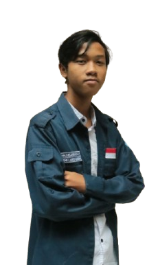

Hi, I'm
I study, design, implement, and maintain network and server infrastructure with a focus on security and efficiency.
View ProjectsA young man interested in the world of networks and servers. I learn, design, and implement them in real life.
Currently I am in the learning stage and implementing every configuration, both network and server, on a medium scale.
Technical proficiencies:

Learn and design various configurations starting from the basics which are expected to produce a configuration that is effective, efficient and flexible in various conditions.
Design and configure server infrastructure efficiently and effectively with virtualization for its testbed.
Using Linux as a reliable and open source operating system so it is very flexible for network & server needs.
Comprehensive security solution featuring firewall rulesets, VPN access control, and intrusion detection systems.
Get In Touch
For questions or to discuss potential collaborations, please contact us through the following channels.
Email Me